# YOLOv4
# 原文
【YOLOv4: Optimal Speed and Accuracy of Object Detection】：https://arxiv.org/abs/2004.10934
# 现在目标检测器的主要构成
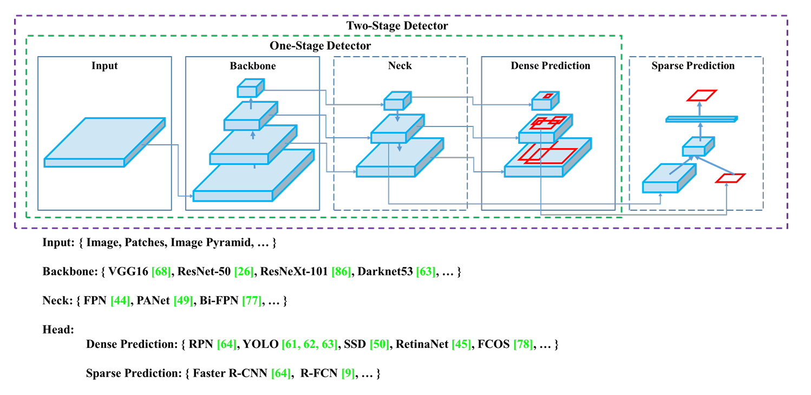单阶段检测器和双阶段检测器的区别：双阶段主要是先找 “哪里可能有目标”，再判断 “是什么目标”，单阶段是直接一步到位：同时预测 “在哪 + 是什么”
# 免费包和特殊包？
Bag of Freebies 免费包：在不增加推理成本（FPS 不变）的情况下，提高检测精度的方法。
-
数据增强类
-
Mosaic 数据增强
-
CutMix
-
MixUp
-
随机裁剪
-
随机翻转
-
颜色扰动
-
数据生成
-
-
损失函数类
-
CIOU Loss
-
Focal Loss
-
Label Smoothing
-
-
正则化技巧
-
DropBlock
-
Batch Normalization
-
Bag of Specials 特殊包：在推理阶段也参与计算，能提高精度，但会增加模型复杂度的方法。
- SPP-Spatial Pyramid Pooling：不同尺寸池化，拼接，增强感受野。
- PANet：用于特征融合，加强低层与高层特征结合，提升小目标检测
- SAM-Spatial Attention Module：空间注意力机制。
- Mish 激活函数：YOLOv4 采用 Mish 代替 LeakyReLU
# 结构
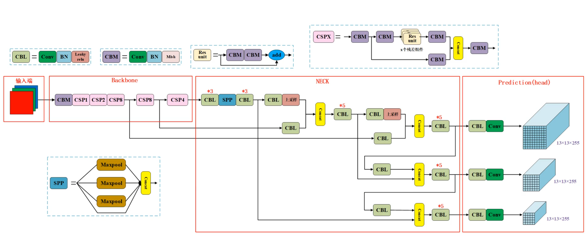# 数据增强
# MixUp
MixUp 防止过拟合、提升泛化能力、让模型学习 “类别之间的连续过渡”，对检测不一定稳定
def mixup_data(x, y, alpha=1.0): | |
lam = np.random.beta(alpha, alpha) | |
batch_size = x.size(0) | |
index = torch.randperm(batch_size) | |
mixed_x = lam * x + (1 - lam) * x[index, :] | |
y_a, y_b = y, y[index] | |
return mixed_x, y_a, y_b, lam |
# CutMix
CutMix 保留清晰目标，比 MixUp 更真实，可能出现不自然边界
def cutmix_data(x, y, alpha=1.0): | |
lam = np.random.beta(alpha, alpha) | |
rand_index = torch.randperm(x.size()[0]) | |
w, h = x.size()[2:] | |
rand_w = np.int_(lam * w) | |
rand_h = np.int_(lam * h) | |
x[:, :, :rand_w, :rand_h] = x[rand_index, :, :rand_w, :rand_h] | |
y_a, y_b = y, y[rand_index] | |
return x, y_a, y_b, lam |
# Bluring
def blur_data(x, sigma): | |
return transforms.GaussianBlur( | |
kernel_size=21, | |
sigma=sigma | |
)(x) |
# Mosaic
4 张图拼接 + 随机裁剪，一次输入看到 4 张图，等价扩大 batch size，可能降低定位精度，训练早期不稳定
import numpy as np | |
import cv2 | |
from PIL import Image | |
def mosaic_augmentation(images, labels, img_size=640): | |
mosaic_img = np.full((img_size * 2, img_size * 2, 3), 114, dtype=np.uint8) | |
xc, yc = [int(random.uniform(img_size * 0.5, img_size * 1.5)) for _ in range(2)] | |
mosaic_labels = [] | |
for i, (img, label) in enumerate(zip(images, labels)): | |
img_w, img_h = img.size | |
scale = min(img_size / img_w, img_size / img_h) | |
new_w, new_h = int(img_w * scale), int(img_h * scale) | |
img_resized = img.resize((new_w, new_h), Image.BILINEAR) | |
img_cv = cv2.cvtColor(np.array(img_resized), cv2.COLOR_RGB2BGR) | |
if i == 0: # 左上角 | |
x1a, y1a, x2a, y2a = max(xc - new_w, 0), max(yc - new_h, 0), xc, yc | |
x1b, y1b, x2b, y2b = new_w - (x2a - x1a), new_h - (y2a - y1a), new_w, new_h | |
elif i == 1: # 右上角 | |
x1a, y1a, x2a, y2a = xc, max(yc - new_h, 0), min(xc + new_w, img_size * 2), yc | |
x1b, y1b, x2b, y2b = 0, new_h - (y2a - y1a), min(new_w, x2a - x1a), new_h | |
elif i == 2: # 左下角 | |
x1a, y1a, x2a, y2a = max(xc - new_w, 0), yc, xc, min(yc + new_h, img_size * 2) | |
x1b, y1b, x2b, y2b = new_w - (x2a - x1a), 0, new_w, min(y2a - y1a, new_h) | |
elif i == 3: # 右下角 | |
x1a, y1a, x2a, y2a = xc, yc, min(xc + new_w, img_size * 2), min(yc + new_h, img_size * 2) | |
x1b, y1b, x2b, y2b = 0, 0, min(new_w, x2a - x1a), min(new_h, y2a - y1a) | |
mosaic_img[y1a:y2a, x1a:x2a] = img_cv[y1b:y2b, x1b:x2b] | |
padw = x1a - x1b | |
padh = y1a - y1b | |
if label.size > 0: | |
label[:, 1] = (label[:, 1] * new_w + padw) / (img_size * 2) | |
label[:, 2] = (label[:, 2] * new_h + padh) / (img_size * 2) | |
label[:, 3] = label[:, 3] * new_w / (img_size * 2) | |
label[:, 4] = label[:, 4] * new_h / (img_size * 2) | |
mosaic_labels.append(label) | |
mosaic_labels = np.vstack(mosaic_labels) if mosaic_labels else np.empty((0, 5)) | |
mosaic_img = Image.fromarray(cv2.cvtColor(mosaic_img, cv2.COLOR_BGR2RGB)) | |
return mosaic_img, mosaic_labels |
# 激活函数
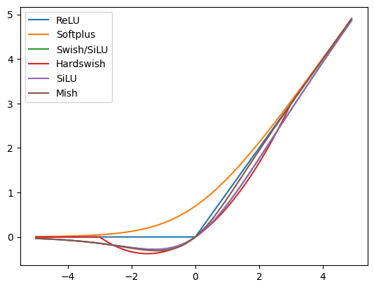 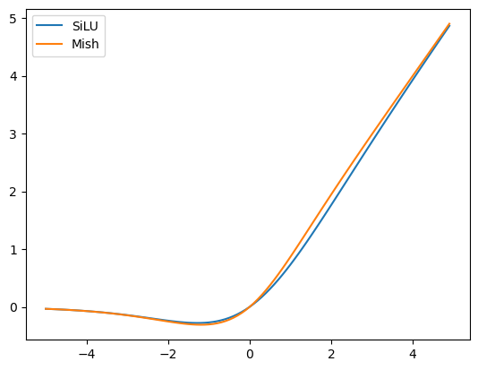Mish 是一个 “理论优雅、效果稳定，但工程性价比一般” 的激活函数。
| YOLO 版本 | 激活 |
|---|---|
| YOLOv3 | Leaky ReLU |
| YOLOv4 | Mish |
| YOLOv5 | SiLU (Swish) |
| YOLOv7 | SiLU |
| YOLOv8 | SiLU |
SiLU 本质上就是 Swish 的 β=1 的情况。
# 标签平滑
标签平滑是不再把真实标签当成 100% 确定，而是留一点不确定性。
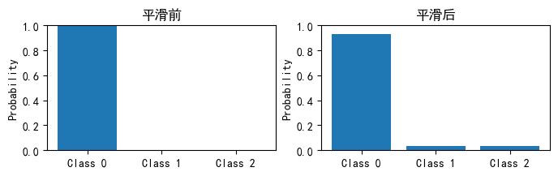推荐在分类任务、检测中的分类头、小数据集、类别不均衡、有噪声标签中使用。
不太适合回归任务、精细分割边界，或已经是 soft label 的任务，如 MixUp 后。
# ResNet…DenseNet…ResNeXt…CSPResNeXt
# ResNeXt
【Aggregated Residual Transformations for Deep Neural Networks】：https://arxiv.org/abs/1611.05431
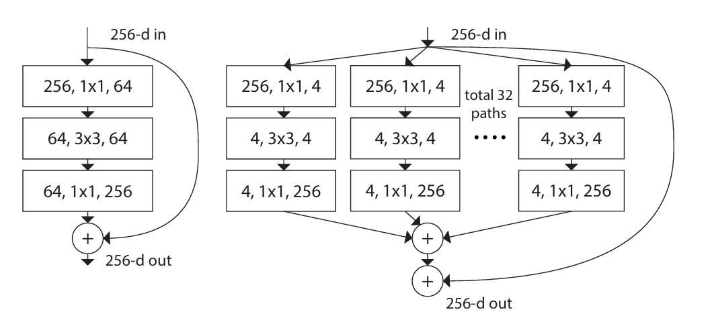
ResNeXt 的一个 block，可以用三种 “等价” 的方式实现：
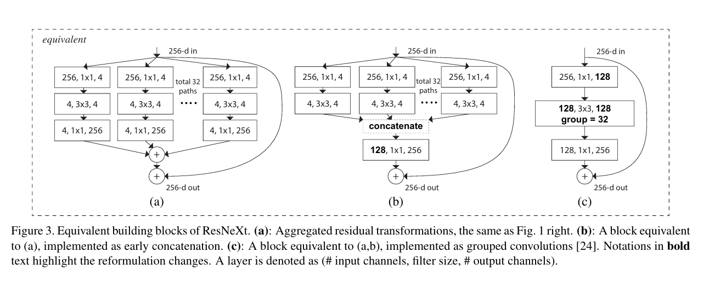(a) 多路径残差分支（概念版）
(b) 提前 concat 的实现（工程版）
© group convolution 的实现（最终高效版）
这个 group convolution 是整篇 ResNeXt 的工程精华，核心思想是把 (b) 中的多分支 + concat，压缩成一次 group convolution。
conv：
group conv：
| 维度 | 普通卷积 | 分组卷积 |
|---|---|---|
| 参数量 | \frac{C_{in} \times C_{out} \times k^2} | |
| 计算量 | \frac{H \times W \times C_{in} \times C_{out} \times k^2} |
【Fundamental Algorithm of Convolution in Neural Networks】：https://www.youtube.com/watch?v=eMXuk97NeSI
import torch.nn as nn | |
conv = nn.Conv2d( | |
in_channels=128, | |
out_channels=128, | |
kernel_size=3, | |
padding=1, | |
groups=32 | |
) |
普通卷积（1 分组）：

2 分组卷积：

8 分组卷积：

8 分组深度可分离卷积：

# DenseNet
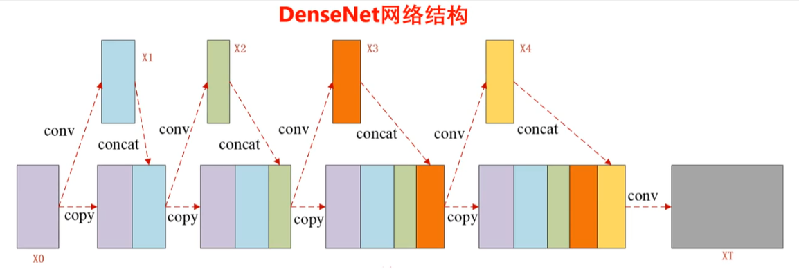# CSPNet
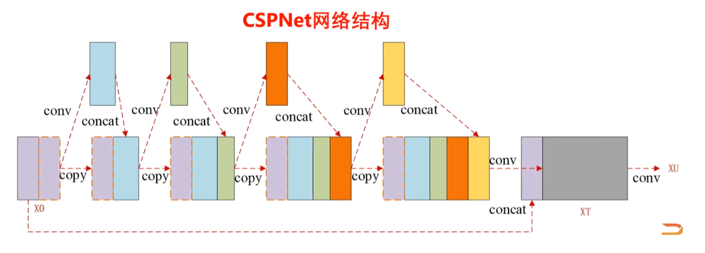# CSPResNeXt
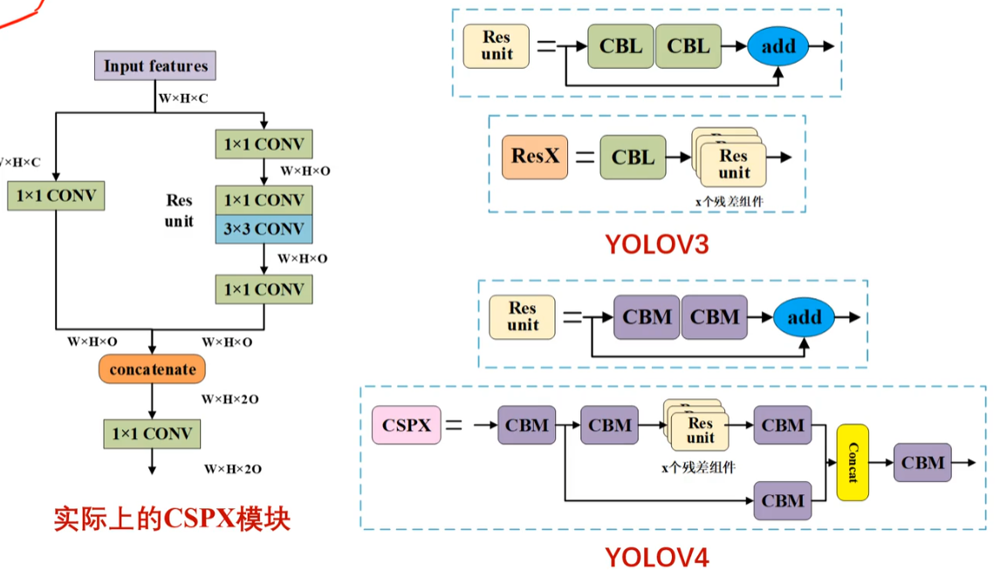前后通道数量保持不变，注意过程是通道数量砍半了，然后后续通过拼接又回来了。
# SPP 空间金字塔池化
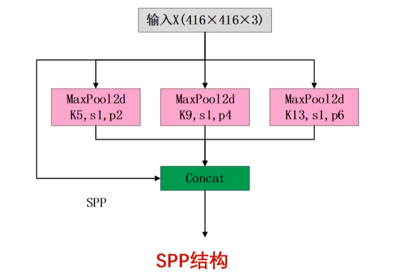YOLOv4 的 SPP 是在不改变特征图尺寸的情况下，用不同尺度的池化来扩大感受野并融合多尺度上下文信息。
| 版本 | SPP |
|---|---|
| YOLOv4 | SPP |
| YOLOv5 | SPPF（Fast SPP） |
| YOLOv8 | SPPF |
SPP 不改变尺寸，只是扩大感受野，最后 concat，本质是多尺度特征融合
为什么不直接用大卷积核？因为参数太多，计算量太大，而 MaxPool 无参数，计算便宜，稳定，这使得以成本极低的方式扩大感受野。
SPP 不是替代普通池化，而是用 “并行大核池化” 增强特征表达，且不改变分辨率。
# FPN+PAN
v3 的 FPN：
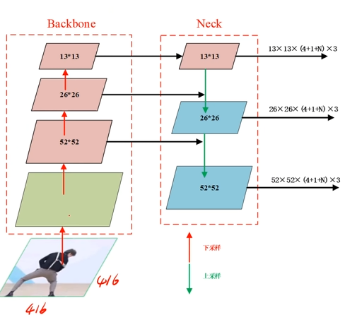v4 的 FPN+PAN：
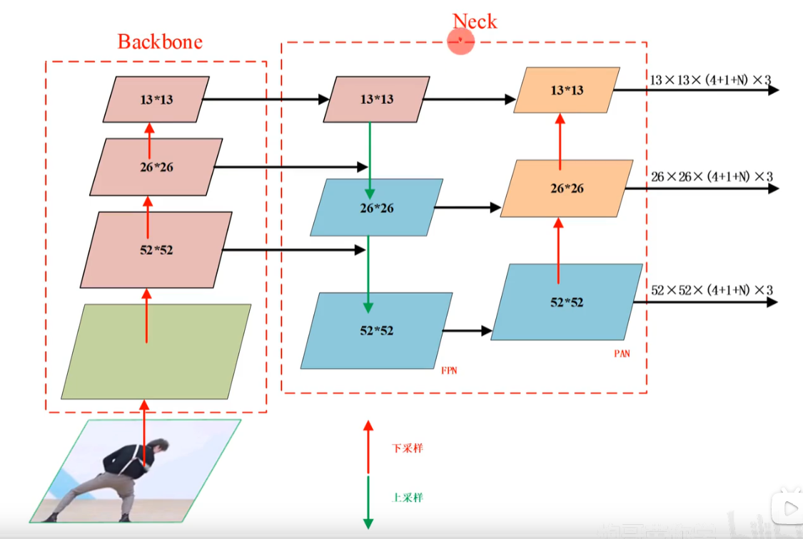# Eliminate grid sensitivity
在 YOLOv3 中，中心点坐标计算公式为 。Sigmoid 函数的输出范围是 ，因此中心点 永远被锁在当前网格 内部。但是这不挺好的嘛？其实不然，如果你想让中心点刚好落在网格的边界线上， 必须取到 或 。但 Sigmoid 函数只有在自变量趋于正负无穷时才能接近 或 。这导致模型在预测边缘物体时非常困难，容易产生大幅波动。
YOLOv4 的解法是给中心点 “松绑” YOLOv4 引入了 （通常取 或 ），公式变为：
当 时，括号内的取值范围从 扩展到了 。如果物体中心点刚好在两个网格的交界处，现在的模型可以让左右两个网格都非常有自信地回归到这个点。 只需要取到 左右（这是函数最敏感、梯度最大的区域）就能轻松覆盖边界，不再需要逼近正负无穷。
# 多正样本策略
YOLOv3 里，匹配逻辑非常严苛：
- 计算目标与所有 Anchor 的 IOU。
- 只有 IOU 最大的那个才被选为正样本。
如果一个物体长宽比很特殊，可能只有一个 Anchor 勉强达标，导致训练样本极少，模型学得慢且不稳定。
YOLOv4 不再单纯看 IOU 最大值，而是看长宽比。只要某个 Anchor 与目标的宽高比例在一定阈值内，这个 Anchor 就会被视为正样本。对于同一个中心点，可能同时有 2 个或 3 个不同尺寸的 Anchor 都在负责预测这个物体。这个改进本质上是降低了正样本的准入门槛。通过让多个 Anchor 和多个邻近网格共同预测一个目标。
# 超参数自动化搜索（遗传算法）
- 初始化种群：随机生成几组超参数组合，比如 10 组。
- 计算适应度：用这些参数去跑模型，看谁的准确率高或损失值低。
- 选择优良个体：选出表现最好的几组参数。
- 交叉与变异：
- 交叉：让两组好参数结婚，产生融合了双方优点的新参数。
- 变异：随机改变某个参数的值，防止模型陷入局部最优，寻找意外惊喜。
- 迭代：不断循环，直到找到那组最完美的超参数。
# CmBN 跨批量标准化
简单来说，CmBN 解决了没钱买顶级显卡，但也想让模型像在顶级显卡上一样稳定训练的问题。
大 Batch 如 64, 算出的均值和方差很稳，模型收敛快。小 Batch 如 4，这可能会使得统计量波动巨大，会导致模型精度断崖式下跌。
BN 需要计算一个 Batch 数据的均值和方差。如果显存不足，只能用很小的 Batch（比如 2 或 4），计算出来的统计量就不准，训练会不稳定。
- BN： 每个 mini-batch 独立计算，互不干扰。
- CBN： 收集前几次迭代的统计量来共同估计当前的均值方差。
- CmBN： 它是在一个完整的 “大 Batch” 内部收集统计信息。
CmBN 是在 CBN 的基础上改进而来的。它的核心逻辑是将一个大 Batch 拆分为多个 mini-batches，并按以下步骤运行：
- 设定迭代次数：假设将一个完整的大 Batch 分为 4 次迭代。
- 梯度累积：在前 3 次迭代中，只计算梯度并累加，不清除梯度，也不更新权重 。
- 统计量收集：计算每个时刻的 BN 统计量。
- 归一化与更新：直到第 4 次迭代完成，模型会利用这 4 次累积的统计信息进行归一化，并最终更新一次权重和缩放位移参数。
# 余弦退火
一般论文里是有启停周期的，是余弦退火的一种变体：带热重启的余弦退火。
下降阶段，学习率会从最大值 随时间缓慢下降到最小值 。 这能让模型在训练后期更加平稳地收敛，精准地找到最优解。当学习率降到最低点后，它会突然弹回到高位。 目的是给模型一个大的冲力，让它跳出可能陷入的局部最优解，去探索更好的区域。
# 从 MSE 到 IoU
MSE 的局限：它对尺度不敏感。同样是 5 像素的误差，对大目标很小，对小目标却是致命的。此外，它不关心框与框之间的重叠程度。
IoU 的优越性：直接衡量两个框的重合度，更直观且鲁棒。
IoU 的痛点：当两个框不重叠时，IoU 恒为 0，梯度消失，模型无法优化。这就是为什么后来又演化出了 GIoU, DIoU, CIoU，YOLOv4 最终采用了 CIoU。
# GIoU 解决不重叠
核心思想：引入一个能包围预测框和真实框的最小外接矩形。
- 原理：在 IoU 的基础上，减去一个惩罚项。这个惩罚项计算的是 “闭包区域中不属于两个框的空白部分” 占闭包区域的比例。
- 优点：当两个框不重叠时，GIoU 不再是 0，而是一个负值。这样模型就能感知到两个框的距离，从而产生梯度，拉动它们互相靠近。
- 缺点：当一个框完全包含另一个框时，GIoU 会退化回 IoU，无法判断内部框的位置优劣。
# DIoU 解决 GIoU 收敛速度慢与退化问题
: 传统的交并比。
: 分别代表预测框和真实框的中心点。
: 代表两个中心点之间的欧几里得距离。
: 能够同时包含预测框和真实框的最小外接矩形的对角线长度。
DIoU 在 IoU 的基础上增加了一个惩罚项。如果两个框离得越远，惩罚就越大。
当预测框 完全包含在真实框 内部时，GIoU 的计算公式中，“最小外接矩形” 其实就是那个较大的真实框 。此时，GIoU 的惩罚项会变成一个固定值或者无法提供有效的梯度来移动内部的小框。
# CIoU 是 DIoU 的完整增强版
其中，新增的两个关键参数含义如下：
：用来衡量长宽比的一致性。
如果预测框和真实框的长宽比越接近，这个值就越趋向于 0。
：这是一个权重函数。
它的作用是，当 IoU 较小时，也就是说两个框还没怎么重合时，形状预测的优先级较低；当 IoU 较大时，模型会更关注形状的微调。
# 损失函数
# v3 的 Loss
# v4 的 Loss
# 定位损失 —— 框得准不准
- CIOU：这是 YOLOv4 的核心改进。它不只看预测框和真实框重合了多少，还考虑了中心点距离和长宽比。这让框的预测比以前更稳、更准。
- 小目标加强： 是一个调节系数。因为小框的几个像素偏差比大框影响更大，这个系数会给小目标更高的权重，强制模型 “精准打击”。
# 置信度损失 —— 有没有东西
- 正样本损失，模型认为这里有物体，且真的有物体。模型要学习如何给出接近 1 的高分。
- 负样本损失，模型看到的只是背景。由于一张图中背景远多于物体，所以前面加了一个系数 （通常取 0.5），防止模型因为背景太多而 “偏科”，只学会预测背景。
# 分类损失 —— 认得对不对
- 这一步只针对有物体的框。它计算每个类别的概率。
- 使用的是二元交叉熵 BCE，这意味着即使一个物体属于多个类别，模型也能很好地处理。
# DrouBlock
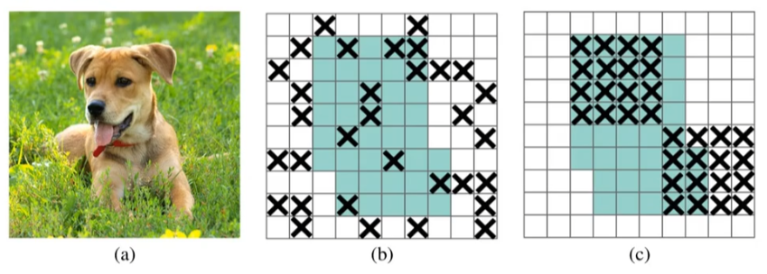Dropout 随机丢弃 “单个神经元”，DropBlock 随机丢弃 “连续的一整块特征区域”
# SAT
它是一种通过引入对抗样本来提高模型鲁棒性和泛化能力的训练方法。SAT 就是一种 “抗干扰训练”。它让 YOLOv4 在训练阶段就见过各种 “故意找茬” 的坏数据，这样在实际应用中，即使遇到模糊、遮挡或复杂的背景，模型的检测效果也会更加稳定。
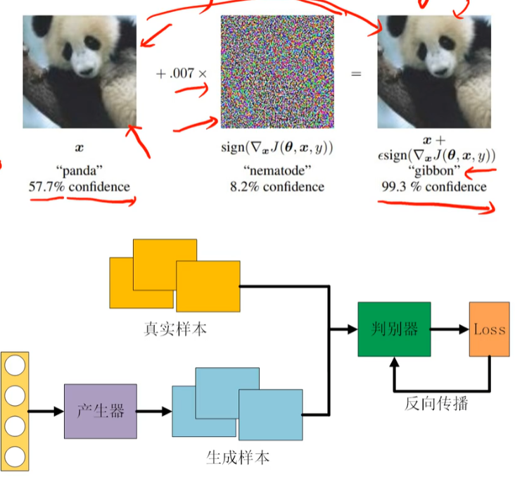# SAM 空间注意力模块
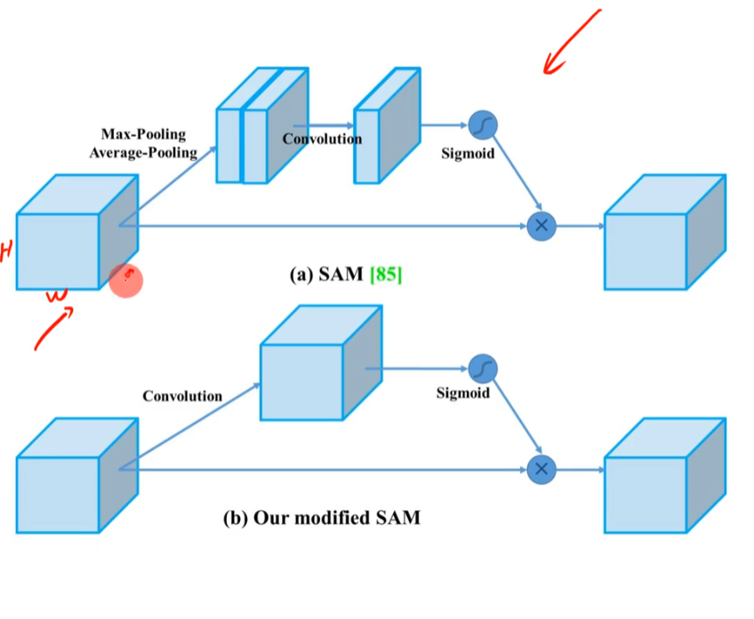原始 SAM (a)：
- 对输入进行最大池化和平均池化。
- 将结果拼接后经过 卷积，生成一个权重图。
- 最后通过 Sigmoid 激活函数，与原图相乘，实现划重点的效果。
** 改进后的 SAM (b) **：
- 更简洁：不再进行复杂的池化操作，而是直接通过一个 卷积对输入特征进行处理。
- 逐像素相乘：经过 Sigmoid 激活后，直接与原始特征图进行像素点对点的相乘。
- 优势：这种改进简化了计算量，同时保留了空间位置的敏感度，帮助模型更专注于图像中有意义的部分。
# 汇总
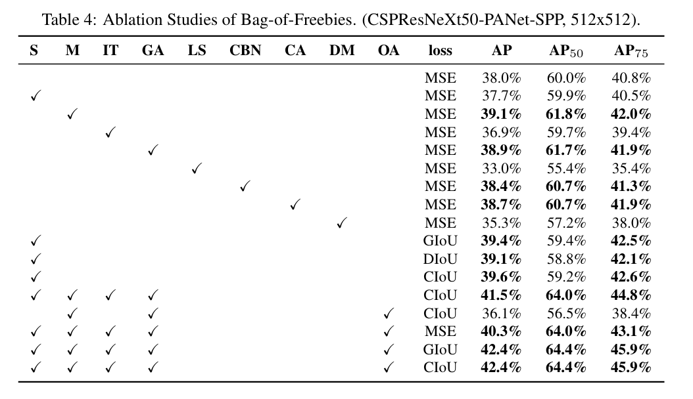LS 标签平滑：勾选 LS 后 AP 从 38.0% 掉到了 33.0%。这说明标签平滑在当前特定的检测任务或配置下可能起到了反作用。
DM Dynamic mini-batch size：AP 掉到了 35.3%，表现也不如基准。
# 参考
- 【YOLOV4 目标检测原理与实战】：https://www.bilibili.com/video/BV1kzDEYdE3i